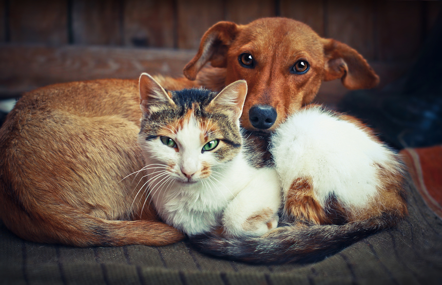

Mejoremos este mundo Juntos
¿Buscas un nuevo miembro para tu familia? Haz click en el siguiente boton
🐾 Presiona las Almohadillas 😻¿Que es A.N.A?
Ana es una fundación dedicada al rescate de animales, es un lugar en donde podras conocer a diferentes pequeños que buscan amor y una familia, A.N.A son las siglas de nuestro lema! "Adopta No Abandones" ¿Sabias que? Más de 4 millones de perros y gatos sin tutor: 3,461,104 perros y 588,173 gatos según el último censo nacional, aunque algunas ONG estiman más de 800,000 felinos callejeros.
